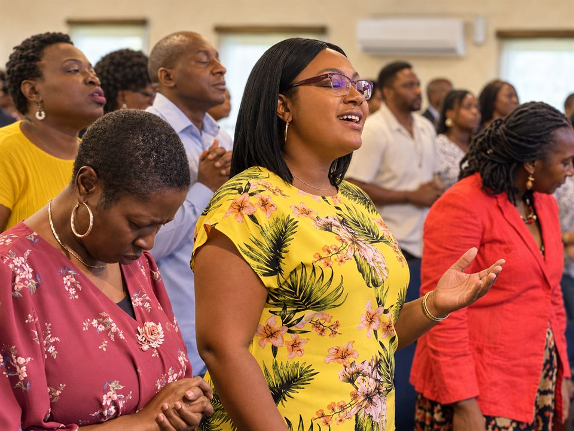
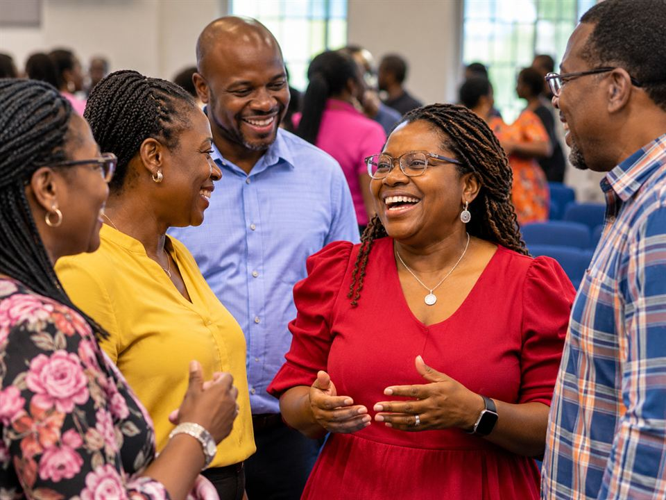
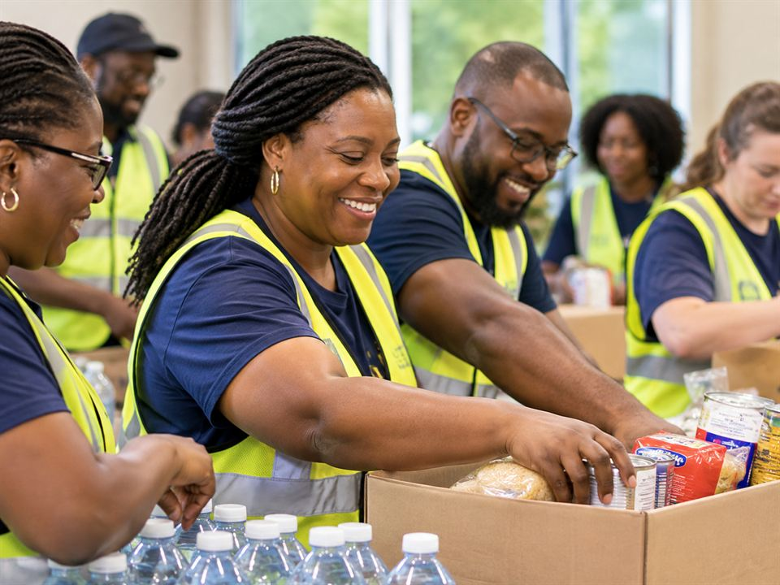

01
Christ-Centered
Jesus Christ is at the heart of everything we do. Through worship, prayer and the Word, we seek to honour Him and reflect His love.
At Mercy Seat Chapel, our vision is to build a Christ-centered family where people encounter God’s mercy and grace, grow as disciples, develop meaningful relationships, and discover their purpose in serving God and others. Five foundational values guide who we are and everything we do.

Jesus Christ is at the heart of everything we do. Through worship, prayer and the Word, we seek to honour Him and reflect His love.
We help people grow into mature followers of Christ through purposeful teaching, mentorship and opportunities to put their faith into action.

Church is more than a gathering; it is a spiritual family built on love, unity, encouragement and genuine care for one another.
Everyone has God-given gifts, talents and resources. We encourage faithful stewardship and joyful service in the church and wider community.

We share the Gospel and show Christ’s love beyond our walls through evangelism, compassion and practical acts of service.
At Mercy Seat Chapel, growth is about more than numbers. It is about building lasting relationships, reaching new people, helping everyone find a place to belong, and creating opportunities for spiritual transformation. Our approach to growth is anchored in four pillars.
Building a Caring Church Family
We build genuine fellowship through prayer, encouragement and celebrating together, supporting one another through every season so everyone experiences a true sense of belonging.
Sharing the Message of Hope
Through evangelism, community outreach, digital media and shared testimonies, we invite more people to experience Christ’s love and join our church family.
Helping Everyone Find Their Place
Through membership classes, ministry groups, training and leadership development, we help visitors and members connect, grow and find meaningful ways to serve.
Creating Opportunities for Transformation
Our services, teaching, conferences, youth and family events and outreach help people deepen their faith, strengthen relationships, discover purpose and make a difference.